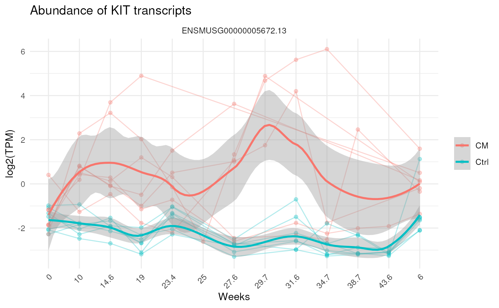

Plot Kit expression over time
library(haemdata)
use_pinboard("onedrive")
gene_of_interest <- "ENSMUSG00000005672" # KIT proto-oncogene receptor tyrosine kinase (Kit)
all_mice <- get_pin("mmu_mrna_all_mice_GENCODEm28_HLT_qc.rds")
se <- subset(all_mice,
select = grepl("2018", SummarizedExperiment::colData(all_mice)$batch)
)
col_data <- SummarizedExperiment::colData(se) |>
as.data.frame() |>
droplevels()
SummarizedExperiment::assay(se, "abundance") |>
tibble::rownames_to_column("gene_id") |>
dplyr::filter(stringr::str_detect(gene_id, gene_of_interest)) |>
tidyr::pivot_longer(!gene_id, names_to = "library_id") |>
dplyr::left_join(col_data) |>
ggplot2::ggplot(ggplot2::aes(y = log2(value + 0.1), x = sample_weeks, group = mouse_id, col = treatment)) +
ggplot2::geom_line(alpha = 0.3) +
ggplot2::geom_point(alpha = 0.3) +
ggplot2::geom_smooth(ggplot2::aes(group = treatment), span = 0.4) +
ggplot2::facet_wrap("gene_id") +
ggplot2::ggtitle(glue::glue("Abundance of KIT transcripts")) +
ggplot2::ylab("log2(TPM)") +
ggplot2::xlab("Weeks") +
ggplot2::theme_minimal() +
ggplot2::theme(
axis.text.x = ggplot2::element_text(angle = 45, hjust = 1),
legend.title = ggplot2::element_blank()
)
Plot cell-type proportions over time
Plot the proportion of cell types over time in the CML “blast crisis” single cell RNAseq dataset
library(haemdata)
library(tidyverse)
library(Seurat)
library(plotly)
use_pinboard("onedrive")
start<-Sys.time()
seurat_object <- get_pin("mmu_10x_blastcrisis_GENCODEm28_HLT.rds", "20231002T230117Z-02ae7")
end<-Sys.time()
end-start
## Time difference of 4.116169 mins
# ~5 mins
metadata_mmu <- get_pin("metadata_mmu.csv", "20230907T012227Z-d3324") |>
dplyr::filter(
stringr::str_detect(cohort, "blastcrisis") &
stringr::str_detect(assay, "scRNA")) |>
dplyr::select(-matches(c("fastq","batch"))) |> unique()
metadata<-left_join(seurat_object[[]], metadata_mmu, by=c("orig.ident"="library_id"))
# Custom color palette
cell_type_palette <- c(
# T-cell related group (Blue)
'T cells' = '#1f78b4',
'Tgd' = '#6baed6',
'NKT' = '#9ecae1',
# Natural Killer and related cells (Red)
'NK cells' = '#e41a1c',
'ILC' = '#ef3b2c',
# B-cell related group (Green)
'B cells' = '#31a354',
'B cells, pro' = '#74c476',
# Monocyte and Macrophage group (Purple)
'Macrophages' = '#984ea3',
'Monocytes' = '#beaed4',
# Dendritic and Granulocytes (Orange)
'DC' = '#ff7f00',
'Basophils' = '#fdbf6f',
'Neutrophils' = '#fdd0a2',
'Eosinophils' = '#fdae6b',
# Miscellaneous immune cells (Brown)
'Mast cells' = '#8c6d31',
# Stem and Stromal cells (Pink)
'Stem cells' = '#f768a1',
'Stromal cells' = '#dd3497',
'Endothelial cells' = '#ae017e',
# Not Available / Unknown (Grey)
'NA' = '#636363'
)
prepared_data <- metadata %>%
group_by(orig.ident, cell_type, sample_weeks, mouse_id) %>%
summarise(cell_count = n(), .groups = 'drop') %>%
group_by(orig.ident, sample_weeks, mouse_id) %>%
mutate(total_count = sum(cell_count)) %>%
ungroup() %>%
mutate(
proportion = cell_count / total_count,
cell_type = factor(cell_type, levels = names(cell_type_palette)))
p<-ggplot(data = prepared_data, aes(x = sample_weeks, y = proportion, color = cell_type)) +
geom_point() +
geom_smooth(method = 'loess', se = FALSE, span = 1) + # Add trend lines
scale_y_log10() +
scale_color_manual(values = cell_type_palette) +
facet_wrap(~ mouse_id) +
labs(title = "Proportion of Cell Types by Sample Weeks and Mouse ID (Log Scale)",
x = "Sample Weeks",
y = "Proportion of Cell Types (Log Scale)") +
theme_minimal()
# Convert ggplot object to a Plotly object
plotly_obj <- ggplotly(p)
# Specify the traces to remain visible
visible_traces <- c('B cells', 'NK cells', 'Macrophages', 'Basophils', 'Neutrophils', 'Eosinophils', 'Mast cells')
# Iterate through traces and adjust default view
for (i in 1:length(plotly_obj$x$data)) {
trace_name <- plotly_obj$x$data[[i]]$name
if (trace_name %in% visible_traces) {
plotly_obj$x$data[[i]]$visible <- TRUE
} else {
plotly_obj$x$data[[i]]$visible <- "legendonly"
}
}
# Display the modified Plotly object
plotly_obj